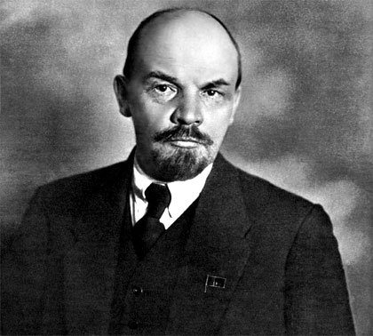

Biograf�a de Lenin
Lenin
 L�der comunista ruso que dirigi� la Revoluci�n de octubre y cre� el r�gimen comunista sovi�tico. Miembro de una familia de clase media de la regi�n del Volga, su animadversi�n contra el r�gimen zarista se exacerb� a partir de la ejecuci�n de su hermano en 1887, acusado de conspiraci�n. Estudi� en las universidades de Kaz�n y San Petersburgo, en donde se instal� como abogado en 1893.
Sus actividades contra la autocracia zarista le llevaron a entrar en contacto con el principal l�der revolucionario ruso del momento, Gueorgui Plej�nov, en su exilio de Suiza (1895); fue �l quien le convenci� de la ideolog�a marxista. Bajo su influencia, contribuy� a fundar en San Petersburgo la Liga de Combate por la Liberaci�n de la Clase Obrera, embri�n del Partido Obrero Socialdem�crata Ruso presidido por Plej�nov.
En 1897, Lenin fue detenido y deportado a Siberia, donde se dedic� al estudio sistem�tico de las obras de Marx y Engels (especialmente El capital, que ya hab�a descubierto en su etapa estudiantil) y elabor� su primer trabajo sobre la aplicaci�n del pensamiento marxista a un pa�s atrasado como Rusia (El desarrollo del capitalismo en Rusia), se�alando el avance de la revoluci�n industrial pese al semifeudalismo de las estructuras imperantes. Tras su liberaci�n en 1900 parti� al exilio y fund� en Ginebra el peri�dico Iskra (�La Chispa�), en colaboraci�n con Plej�nov; por entonces public� la obra Qu� hacer (1902), en donde defendi� la posibilidad de hacer triunfar en Rusia una revoluci�n socialista con tal de que estuviera dirigida por una vanguardia de revolucionarios profesionales decididos y organizados como un ej�rcito.
En el II Congreso del Partido Socialdem�crata Ruso (1903), Lenin impuso aquellas ideas al frente del grupo radical bolchevique, que defend�a su modelo de partido fuertemente disciplinado como vanguardia de una revoluci�n que cre�a viable a corto plazo; en 1912 quedar�a confirmada definitivamente la ruptura con la minor�a menchevique de Plej�nov y Martov, apegada a un modelo de partido de masas que preparara las condiciones para el triunfo de la revoluci�n obrera a m�s largo plazo, pasando antes por una etapa de democracia burguesa.
En 1905 Lenin volvi� a San Petersburgo para participar en la revoluci�n que hab�a estallado en Rusia como consecuencia de la derrota en la Guerra Ruso-Japonesa; aunque el r�gimen zarista super� la crisis, Lenin consider� aquel movimiento como un �ensayo general� de la revoluci�n socialista, del que apreci� especialmente la forma organizativa espont�nea de los revolucionarios rusos, como eran los s�viets o consejos populares. El fracaso de aquella revoluci�n le oblig� a exiliarse de nuevo en 1907.
| Fecha de nacimiento: | 22 de abril de 1870, Uli�novsk, Rusia |
| Fallecimiento: | 21 de enero de 1924, Gorki L�ninskiye, Rusia |
| Nombre completo: | Vladimir Ilyich Ulyanov |
| Obras notables: | El imperialismo, fase superior del capitalismo |
Bandera de la USSR
.jpg)
Lenin pronunciando un discurso en la plaza Roja (Mosc�, 1918)